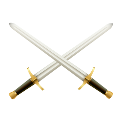

<!DOCTYPE html>
<html>
<head>
  <title>خريطة جزيرة العرب مع نقاط مخصصة</title>
  <meta charset="utf-8" />
  <meta name="viewport" content="width=device-width, initial-scale=1.0">
  <!-- تضمين Leaflet CSS -->
  <link rel="stylesheet" href="https://unpkg.com/leaflet/dist/leaflet.css" />
  <style>
    html, body, #map {
      height: 100%;
      margin: 0;
      padding: 0;
    }
    .custom-marker {
      text-align: center;
      transition: transform 0.1s ease, font-size 0.1s ease;
      will-change: transform, font-size;
    }
    .custom-marker img {
      display: block;
      margin: 0 auto;
      width: 100%;
      height: auto;
    }
    .custom-marker span {
      display: block;
      margin-top: 4px;
      color: #fff;
      font-weight: bold;
      text-shadow:
        -1px -1px 0 #000,
        1px -1px 0 #000,
        -1px 1px 0 #000,
        1px 1px 0 #000;
      transition: font-size 0.1s ease;
    }
  </style>
</head>
<body>
  <!-- عنصر الخريطة -->
  <div id="map"></div>

  <!-- تضمين Leaflet JavaScript -->
  <script src="https://unpkg.com/leaflet/dist/leaflet.js"></script>
  <!-- تضمين Papa Parse لتحليل CSV -->
  <script src="https://unpkg.com/papaparse@5.3.2/papaparse.min.js"></script>
  <script>
    // تحديد حدود جزيرة العرب مع تمديدها قليلاً نحو الغرب والشمال
    var arabianBounds = L.latLngBounds(
      [10.0, 30.0], // الزاوية الجنوبية الغربية (خط العرض، خط الطول)
      [35.0, 65.0]  // الزاوية الشمالية الشرقية
    );

    // تهيئة الخريطة وتحديد الموقع والزووم الافتراضي
    var map = L.map('map', {
      center: arabianBounds.getCenter(),
      zoom: 5,
      minZoom: 4, // الحد الأدنى للتكبير
      maxZoom: 10, // الحد الأقصى للتكبير
      maxBounds: arabianBounds,
      maxBoundsViscosity: 1.0,
      zoomControl: true,
      attributionControl: false
    });

    // إضافة طبقة Esri World Imagery إلى الخريطة مع تحديد الحدود
    var Esri_WorldImagery = L.tileLayer('https://server.arcgisonline.com/ArcGIS/rest/services/World_Imagery/MapServer/tile/{z}/{y}/{x}', {
      attribution: '',
      bounds: arabianBounds,
      noWrap: true,
      minZoom: 4,
      maxZoom: 10
    }).addTo(map);

    // منع تحميل البلاطات خارج الحدود المحددة
    Esri_WorldImagery.on('tileloadstart', function(event) {
      var tile = event.tile;
      var tileSize = this.getTileSize();
      var tilePoint = this._tileCoordsToNwSe(event.coords);
      var tileBounds = L.latLngBounds(tilePoint[0], tilePoint[1]);

      if (!arabianBounds.intersects(tileBounds)) {
        tile.src = L.Util.emptyImageUrl;
      }
    });

    // ضبط حدود الخريطة لتكون الحدود الجديدة الممتدة
    map.setMaxBounds(arabianBounds);

    // خيار إضافي: تغيير موضع عناصر التحكم في التكبير/التصغير
    map.zoomControl.setPosition('topright');

    // مصفوفة لتخزين العلامات لتحديثها عند تغيير مستوى التكبير
    var markers = [];

    // وظيفة لحساب حجم الأيقونة والنص بناءً على مستوى التكبير
    function getMarkerSize(zoom) {
      var baseZoom = 4; // مستوى التكبير الأساسي
      var scaleFactor = Math.pow(2, zoom - baseZoom);

      var baseIconSize = 20; // الحجم الأساسي للأيقونة عند مستوى التكبير الأساسي
      var baseFontSize = 12; // الحجم الأساسي للخط عند مستوى التكبير الأساسي

      var iconSize = baseIconSize * scaleFactor;
      var fontSize = baseFontSize * scaleFactor;

      var maxIconSize = 100; // الحد الأقصى لحجم الأيقونة
      var maxFontSize = 30; // الحد الأقصى لحجم الخط

      return {
        iconSize: iconSize > maxIconSize ? maxIconSize : iconSize,
        fontSize: fontSize > maxFontSize ? maxFontSize : fontSize
      };
    }

    // وظيفة لإنشاء أو تحديث الأيقونة المخصصة
    function createCustomIcon(name, sizes) {
      var iconHtml = '<div class="custom-marker" style="font-size: ' + sizes.fontSize + 'px; width: ' + sizes.iconSize + 'px; height: ' + (sizes.iconSize + sizes.fontSize + 4) + 'px;">' +
                      '' +
                      '<span style="font-size: ' + sizes.fontSize + 'px;">' + name + '</span>' +
                     '</div>';

      var customIcon = L.divIcon({
        html: iconHtml,
        className: '',
        iconSize: [sizes.iconSize, sizes.iconSize + sizes.fontSize + 4],
        iconAnchor: [sizes.iconSize / 2, sizes.iconSize + sizes.fontSize + 4],
      });

      return customIcon;
    }

    // وظيفة لتحميل بيانات CSV وإضافة النقاط إلى الخريطة
    function loadCSVData() {
      var csvUrl = 'https://docs.google.com/spreadsheets/d/e/2PACX-1vSNx5cQzCbAG4rUIQFsvnlVozC4jsofepc4hG1BQxyoUYaYZtQtXip8nMEoDP95cTMAJ5xtOwi-4qgU/pub?output=csv';

      Papa.parse(csvUrl, {
        download: true,
        header: true,
        complete: function(results) {
          var data = results.data;
          var zoom = map.getZoom();
          var sizes = getMarkerSize(zoom);

          data.forEach(function(item) {
            var lat = parseFloat(item.Latitude);
            var lng = parseFloat(item.Longitude);
            var name = item.Name;

            if (!isNaN(lat) && !isNaN(lng)) {
              var customIcon = createCustomIcon(name, sizes);

              // إضافة العلامة إلى الخريطة وتخزينها في المصفوفة
              var marker = L.marker([lat, lng], { icon: customIcon }).addTo(map);
              markers.push({ marker: marker, data: item });
            }
          });
        },
        error: function(err) {
          console.error('حدث خطأ أثناء تحميل بيانات CSV:', err);
        }
      });
    }

    // استدعاء الوظيفة لتحميل البيانات
    loadCSVData();

    // تحديث حجم الأيقونات والنص عند تغيير مستوى التكبير
    map.on('zoomend', function() {
      var zoom = map.getZoom();
      var sizes = getMarkerSize(zoom);

      markers.forEach(function(item) {
        var name = item.data.Name;
        var customIcon = createCustomIcon(name, sizes);
        item.marker.setIcon(customIcon);
      });
    });

  </script>
</body>
</html>
